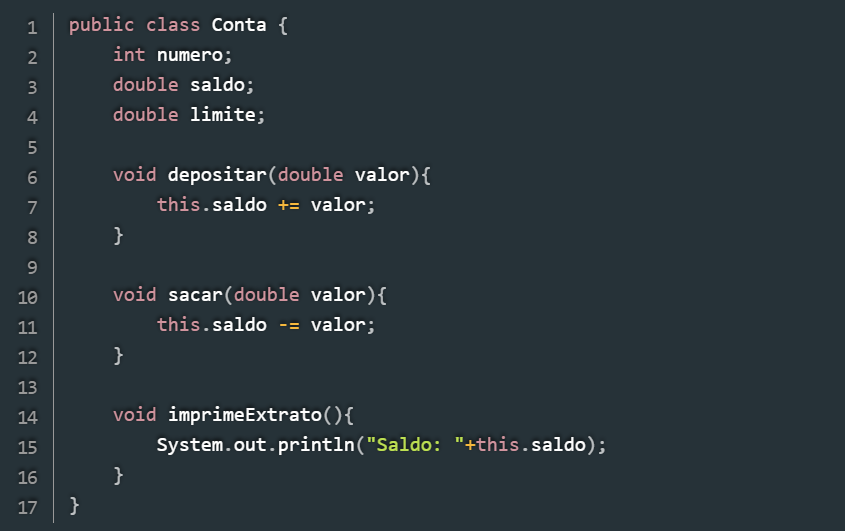
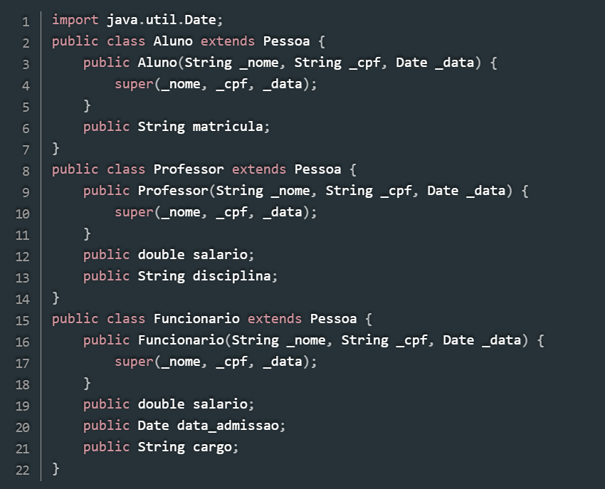
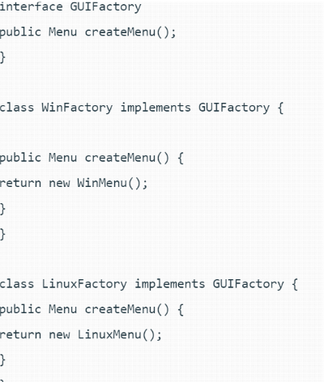

Caro programador, se você está começando a aprender sobre P.O.O. mas ainda não entendeu como funciona, esse site é para você! Assim como você, eu já estive no seu lugar, e eu precisei pedir para o chat GPT me explicar esse conteúdo (não façam isso crianças). Então para não haver mais dúvidas, decidi criar esse site com informações verídicas e confiáveis para os futuros desenvolvedores. Agora sem mais enrolação, bora aprender!
A POO é definida como um modelo de programação que se baseia no conceito de classes e objetos. Isto é, você pode usá-la para estruturar um programa em blocos de código simples e reutilizáveis (neste caso, geralmente chamados de classes), que você usará para criar categorias individuais dos objetos. Basicamente, OOP é um padrão de programação que é construído em torno de objetos ou entidades. Por isso, ela é chamada de programação orientada a objetos.
Para ter uma compreensão mais clara do conceito, vamos examinar programas que são frequentemente utilizados. Um ótimo exemplo para ilustrar isso é quando utilizamos uma impressora para imprimir um documento. O primeiro passo é acionar a impressão, seja clicando no ícone correspondente ou utilizando os atalhos no teclado. Depois disso, é necessário escolher a impressora desejada. Em seguida, você aguardará uma confirmação sobre a impressão do documento. Nos bastidores, embora não possamos perceber, o comando que você ativou se comunica com um dispositivo (a impressora) para executar a tarefa de impressão.
Para compreendermos claramente o que se trata a orientação a objetos, é fundamental analisar os requisitos que uma linguagem precisa para ser classificada dentro desse paradigma. Nesse sentido, a linguagem deve satisfazer quatro pilares essenciais
Este é o princípio que relaciona os dados. As funções se encarregam de manipular as informações e de mantê-las protegidas, ou seja, o acesso direto às informações não é permitido quando elas estão sob sigilo. Para conseguir acesso, é necessário interagir com o responsável que gerencia esses dados. De uma forma mais simples, imagine um departamento de recursos humanos. Os integrantes dessa equipe ocultam – encapsulam - as informações a respeito dos colaboradores. Eles decidem como esses dados serão utilizados e manipulados. Qualquer pedido relacionado às informações dos funcionários deve ser feito através deles. BENEFÍCIOS: Ao encapsular dados, você garante uma maior segurança e confiabilidade das informações dentro do seu sistema. Além disso, é possível monitorar o modo como os dados são acessados e quais ações são executadas sobre eles, facilitando a manutenção do programa e aprimorando o processo de depuração.
Veja um exemplo de encapsulamento, gera-se os atributos privados (private) e é realizado o processo de geração dos métodos setters e getters.
A abstração se refere à utilização de classes simplificadas para representar a complexidade de um sistema. Resumidamente, adotamos a abstração para tornar a complexidade mais flexível, permitindo que o usuário tenha acesso apenas a informações que são relevantes e úteis. Um exemplo prático para demonstrar isso é a condução de um carro automático. Quando você quer fazer uma viagem do ponto A ao ponto B, tudo o que necessita fazer é informar o destino e ligar o carro. Desde então, o veículo irá levá- lo até o local desejado. O que não é necessário que você saiba é sobre a construção do carro, como ele interpreta e executa as instruções, ou como ele avalia diferentes opções para encontrar a rota mais eficiente, entre outros aspectos. Esse mesmo princípio é aplicado na criação de aplicações em Programação Orientada a Objetos (OOP). Nessa abordagem, oculta-se informações que o usuário não precisa acessar. A abstração simplifica o processo, permitindo que você gerencie seus projetos em partes menores e mais controláveis. BENEFÍCIOS: Nesse sentido, a abstração permite aos desenvolvedores criar modelos simplificados de elementos complexos do mundo real, focando apenas nos aspectos que são importantes para a aplicação sendo desenvolvida.

Uma classe é reconhecida quando tem a palavra reservada “class”. Na figura 1 é mostrada a classe “Conta” com seus atributos (características) e métodos (ações).
A herança possibilita que as classes literalmente herdem recursos entre si. Por exemplo, é possível agrupar todos os gatos, destacando certas características em comum, como o fato de terem quatro patas. As diferentes raças, por sua vez, oferecem uma classificação mais detalhada, levando em conta traços específicos, como tamanho e cor. Na Programação Orientada a Objetos (OOP), a herança é utilizada para organizar os objetos de seus programas com base em características e funcionalidades comuns. Isso facilita o gerenciamento de objetos e a programação, pois você pode definir propriedades gerais em um objeto “pai” e permitir que os objetos “filhos” recebam essas características. Um exemplo disso seria a criação de um objeto "funcionário", que abrange todas as características comuns dos colaboradores da sua empresa. Subsequentemente, você poderá criar um objeto "gerente", que não apenas herda as propriedades do objeto "funcionário", mas também inclui características específicas dos gerentes da sua organização. Dessa forma, quaisquer alterações na definição do objeto "funcionário" serão refletidas automaticamente no objeto "gerente". BENEFÍCIOS: Com a herança, você pode criar novas classes que herdam atributos e métodos de uma classe base, eliminando a necessidade de reescrever código semelhante, favorecendo assim a eficiência e a uniformidade.

Neste primeiro código, vemos que a classe pessoa possui nome, CPF, e data de nascimento como atributos; além de um construtor, que recebe estes três dados como parâmetro, e assim preenche os atributos do objeto. Na criação de um objeto Pessoa, o programa deve fornecer seus dados. Analisando professores, alunos e funcionários, vemos que todos podem (devem) ter cpf, nome e data de nascimento; portanto, nada mais justo que criar subclasses de “pessoa” para representa-los. Em Java, criamos classes derivadas utilizando a palavra *extends*, seguida do nome da superclasse.
Esse é o efeito de dois objetos distintos agirem de forma semelhante. O software identificará qual utilização é essencial para cada instância do objeto da classe “pai”, minimizando a repetição de código. Além disso, possibilita que diversas categorias de objetos se interfiram através de uma interface comum. BENEFÍCIOS: Permitir escrever códigos que funcionam para diversos tipos de objetos, e não apenas para um tipo. É apenas escrever o código para os métodos da classe base e usar métodos virtuais, e então esse código se adaptará a qualquer classe decorrente.

Na figura acima tem a fábrica abstrata “GUIFactory” que é implementada pelas fábricas concretas WinFactory e LinuxFactory que vão criar a mesma coisa, ou seja, um menu, no entanto cada sistema tem seu tipo de menu com seu próprio tamanho, tipo, design, etc.
Atualmente, a maioria das linguagens de programação possibilita que os desenvolvedores integrem diferentes paradigmas. Essa flexibilidade acontece principalmente porque esses paradigmas podem ser aplicados em diversas abordagens de programação. Além disso, aqueles que atuam com Programação Orientada a Objetos (OOP) costumam concordar que essa abordagem geralmente resulta em estruturas de dados mais eficientes e na reutilização de código, o que acaba economizando tempo ao longo do processo.